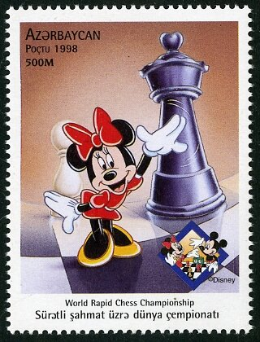

🐭Мики Маус
Мики Маус (на английски: Mickey Mouse) е американски рисуван герой, който се е превърнал в символ на The Walt Disney Company.
Създаден е съвместно от Уолт Дисни и Уб Айуъркс през 1928 г., а озвучаван първоначално от Уолт Дисни.
Човекоподобната мишка постепенно се превръща от обикновен анимационен и комиксов герой в един от най-разпознаваемите световни символи.
Мини Маус
Мини Маус е рисувана героиня мишка, приятелка и съратница на Мики Маус.
Тя е героиня в много комикси и анимационни филми. Първата ѝ поява е през 1928 г.

Интересни факти за Мики Маус:
- Мики е първият анимационен герой, който получава звезда в Холивудската алея на славата.
- Мики не само получава награди, но и ги връчва.
- В някои страни Мики Маус се нарича различно: Мусе Пиг, Ми Лао Шу, Тополино, Мики Хири, Мишел Сорис и Мики Мяус.
- Първите думи, които Мики произнася на екрана са именно „Хот-дог! Хот-дог!“
- Може да решите, че Мики Маус винаги носи една и съща дреха -червени панталони и бели ръкавици. В действителност обаче гардеробът му е разнообразен – за своя живот той е облякъл над 175 костюма!
- Благодарение именно на Мики Маус в СССР започва развитието на анимацията
🐠 Интересно видео за Мики Маус